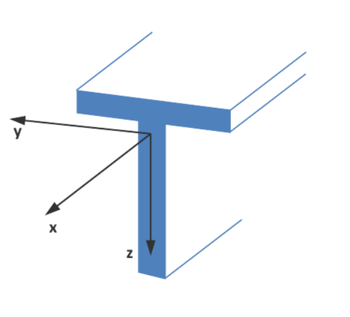
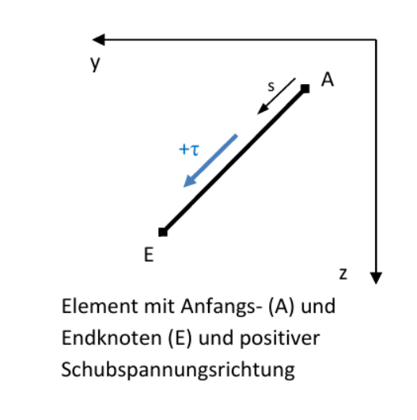
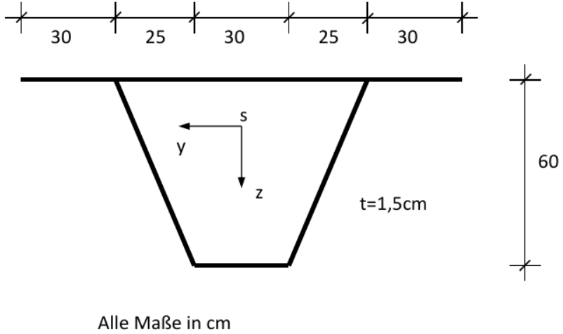
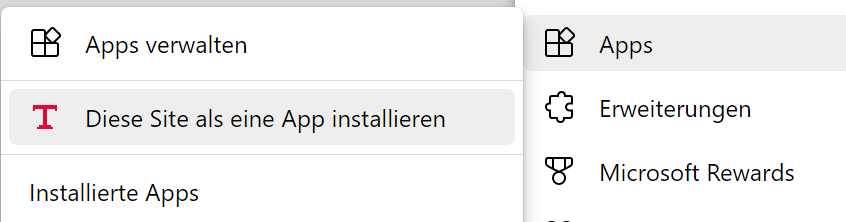

Mit dieser App können Querschnittswerte und
Spannungen von dünnwandigen Querschnitten berechnet werden. Es wird
die finite Element Methode verwendet [1], [2]. Der Querschnitt wird
ähnlich wie ein Stabwerk oder Fachwerk durch mehrere gerade Elemente
beschrieben, die über Knoten miteinander verbunden sind. Die Theorie
erfordert, dass jedes Element mindestens eine Verbindung zu einem anderen
Element haben muss. Es dürfen also keine Elemente „alleine“ im
Querschnitt sein. Dies bedeutet, dass es von jedem Element einen Pfad zu allen anderen Elementen geben muss.
Die Elemente haben einen Anfangs- und Endknoten und
können quadratische Schubspannungsverläufe exakt darstellen.
Deshalb ist keine Verfeinerung erforderlich. Die Richtung der
Schubspannungen wird in den Viertelspunkten der Elemente an der
rechten und linken Seite mit Pfeilen angezeigt.
Die Normalspannungen infolge N, My und Mz werden mit den üblichen Formeln der Mechanik unter Annahme des Ebenbleibens der Querschnitte nach Bernoulli berechnet.
Die Schubspannungen sind positiv, wenn sie in Richtung des lokalen Koordinatensystems des Elementes wirken. Die positive lokale Richtung zeigt vom Anfangs- zum Endknoten des Elementes.
Eigenschaften des Programms:
Der Querschnitt kann unsymmetrisch, offen und/oder geschlosssen speichern
Linear elastisches Material
Die Breite der Elemente ist elementweise konstant
Jedes Element hat eigene Materialeigenschaften
Berechnung aller Querschnittswerte
Spannungsberechnung infolge von Normal- und Querkräften N, Vy und
Vz,
Biegemomente My und Mz,
Primärer und sekundärer Torsion Mxp , Mxs
sowie Wölbbimoment Mω.
Der Querschnitt wird in der y-z Ebene und in einer 3D-Ansicht
dargestellt. Die Schubspannungen werden parallel zur x-Achse flächig
über die Elementdicke gezeichnet.


Dieses Beispiel wurde in [2] behandelt.

Schnittgrößen:
Mxp = 25.000 kNcm; Mxs = 15.000 kNcm; Mω = 100.000 kNcm²
Vy = 1000 kN; Vz = 500 kN
Material:
E = 21.000 kN/cm²; G = 8.100 kN/cm²; ν = 0,2963
Als Dezimal-Trennzeichen ist das Komma oder der Punkt zulässig. Ein Tausender-Trennzeichen ist nicht zulässig.
Wenn eine Maus angeschlossen ist, dann ergeben sich zusätzliche Möglichkeiten der Eingabe bei den Tabellen. Es kann durch Drücken der linken Maustaste ein Block selektiert werden. Nach Drücken der rechten Maustaste erscheint ein Kontextmenü.
Hinweis: An jedes Tablett und Smartphone läßt sich eine Bluetooth Maus und/oder Tastatur anschließen.
Um den begrenzten Bildschirmplatz auf Smartphones und Tabletts besser zu nutzen, werden die Anzahl der Zeilen in den Tabellen für die Knotenkoordinaten und Elemente durch die Eingabe der Anzahl Knoten und Elemente bestimmt. Deshalb sind erst die neue Anzahl Elemente und Knoten einzugeben und dann die Tabellen mit Hilfe des Buttons 'resize Tabellen' zu änden. Der Vorgang kann beliebig oft wiederholt werden.
Diese Anwendung ist als Web App programmiert, so dass sie unter Android und IOS auf dem Desktop installiert werden kann. Dafür wird auf dem Desktop ein Icon erstellt. Damit verhält sich die App wie eine aus einem Store installierte App. DuennQs wird natürlich weiterhin im installierten Browser ausgeführt, allerdigs im Vollbildmodus. Nachdem duennQs erstmalig im Browser gestartet wurde, wählt man unter Android im Chrome Browser rechts oben aus dem Anwendungsmenue (Drei-Punkte-Menü) die Option 'App installieren'. Ein Dialog erscheint, der zu bestätigen ist. Danach kann der Browser geschlossen werden. Auf dem Desktop gibt es jetzt ein neues Icon mit Namen DuennQs.
Für die Installation unter IOS ist der Safari Browser zu verwenden. Hier heißt der Befehl 'Zum Home-Bildschirm' mit dem Addieren-Symbol
Die Installation unter Microsoft Windows ist ähnlich der Installation unter Android. Im Edge Browser steht folgender Abschnitt im Anwendungsmenue (Drei-Punkte-Menü) 
Unter den PC-Betriebsystemen Microsoft Windows und Linux kann alternativ mit der F11-Taste in den Vollbildmodus umgeschaltet werden.
[1] Matthias Kraus: Computerorientierte Berechnungsmethoden für beliebige Stabquerschnitte des Stahlbaus, Dissertation, Bochum 2005
[2] Matthias Kraus; Rolf Kindmann: Finite-Elemente-Methoden im Stahlbau, 2.Auflage, Ernst W. & Sohn Verlag, 2019